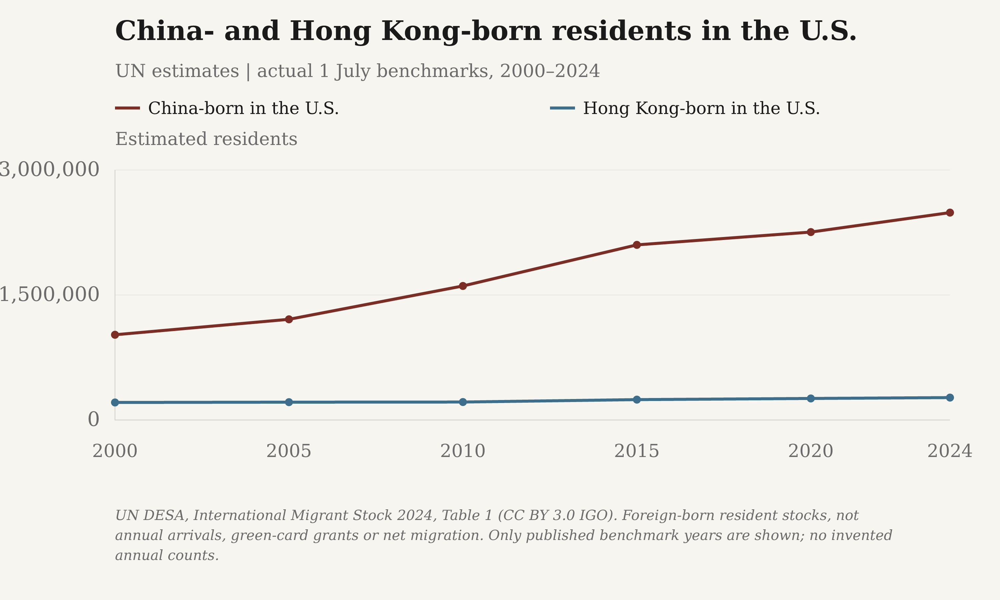
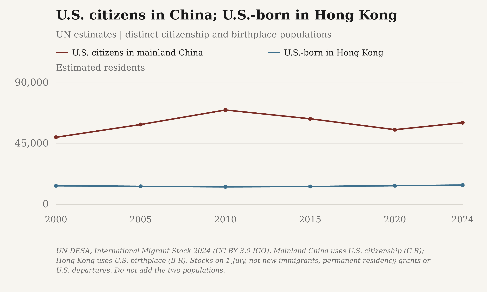
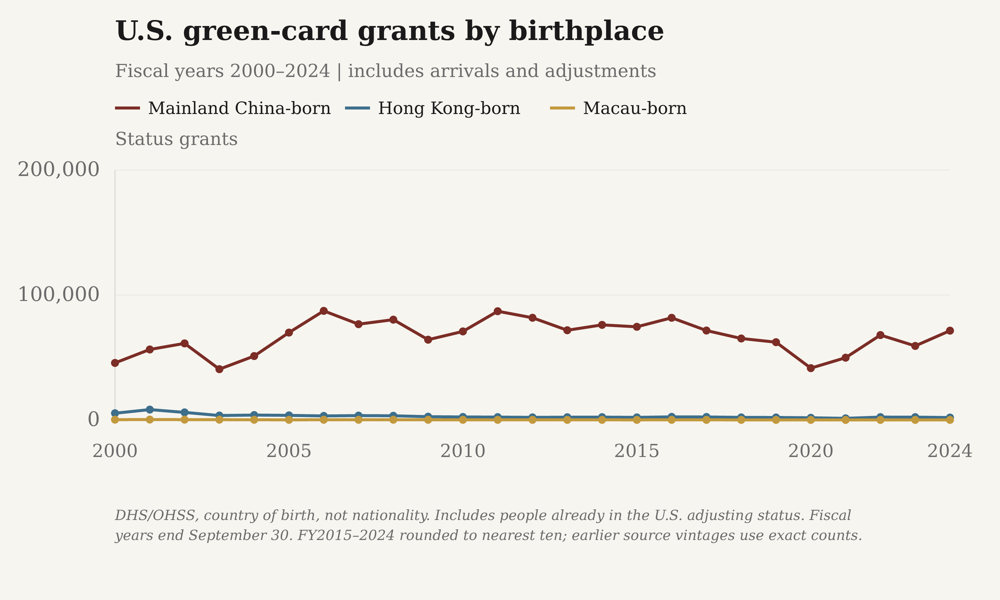
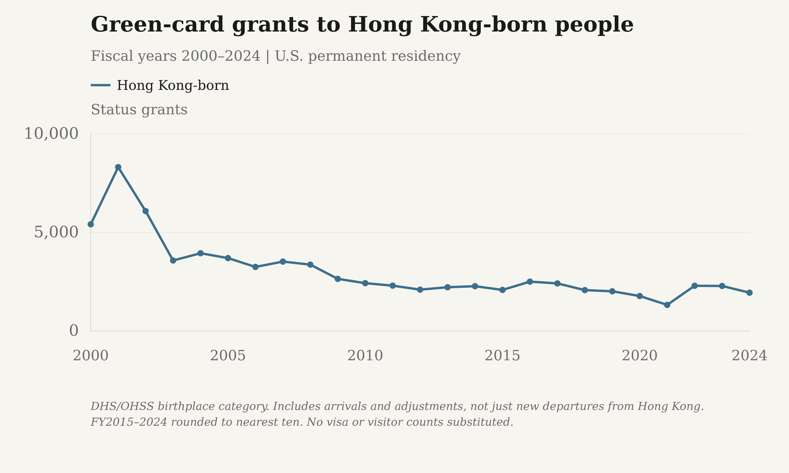
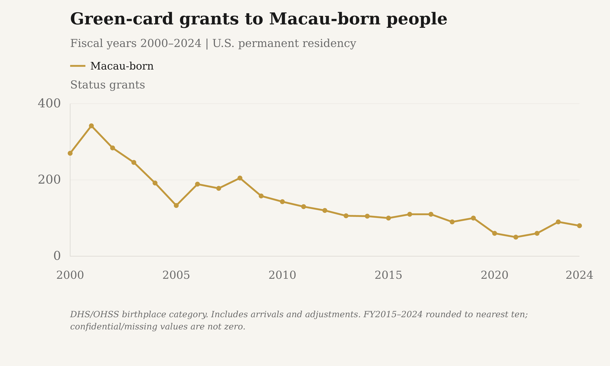
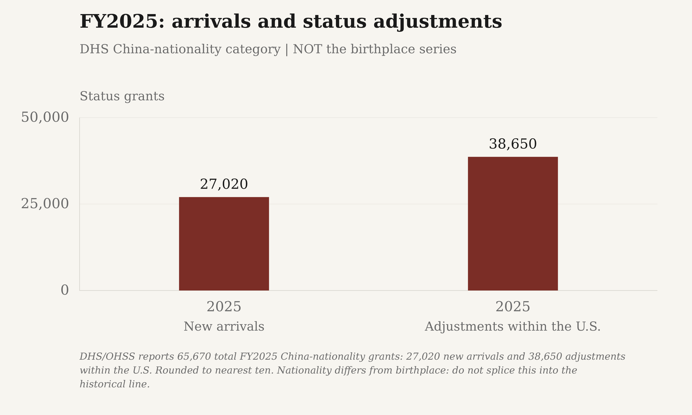

China- and Hong Kong-born residents in the U.S.

UN DESA, International Migrant Stock 2024, Table 1 (CC BY 3.0 IGO). Foreign-born resident stocks, not annual arrivals, green-card grants or net migration. Only published benchmark years are shown; no invented annual counts.
Download reported values as a high-resolution PNG or editable SVG:
- The Margin of Error: PNG (3000 × 1800) · SVG
- Substack: PNG (3000 × 1800) · SVG


Exact reported values
| Population | Period | Estimated residents | Precision |
|---|---|---|---|
| China-born in the U.S. | 1 July 2000 | 1,022,890 | estimated |
| China-born in the U.S. | 1 July 2005 | 1,208,274 | estimated |
| China-born in the U.S. | 1 July 2010 | 1,608,501 | estimated |
| China-born in the U.S. | 1 July 2015 | 2,101,592 | estimated |
| China-born in the U.S. | 1 July 2020 | 2,255,170 | estimated |
| China-born in the U.S. | 1 July 2024 | 2,488,775 | estimated |
| Hong Kong-born in the U.S. | 1 July 2000 | 210,485 | estimated |
| Hong Kong-born in the U.S. | 1 July 2005 | 214,124 | estimated |
| Hong Kong-born in the U.S. | 1 July 2010 | 215,677 | estimated |
| Hong Kong-born in the U.S. | 1 July 2015 | 244,595 | estimated |
| Hong Kong-born in the U.S. | 1 July 2020 | 258,439 | estimated |
| Hong Kong-born in the U.S. | 1 July 2024 | 268,915 | estimated |
U.S. citizens in China; U.S.-born in Hong Kong

UN DESA, International Migrant Stock 2024 (CC BY 3.0 IGO). Mainland China uses U.S. citizenship (C R); Hong Kong uses U.S. birthplace (B R). Stocks on 1 July, not new immigrants, permanent-residency grants or U.S. departures. Do not add the two populations.
Download reported values as a high-resolution PNG or editable SVG:
- The Margin of Error: PNG (3000 × 1800) · SVG
- Substack: PNG (3000 × 1800) · SVG


Exact reported values
| Population | Period | Estimated residents | Precision |
|---|---|---|---|
| U.S. citizens in mainland China | 1 July 2000 | 49,655 | estimated |
| U.S. citizens in mainland China | 1 July 2005 | 59,103 | estimated |
| U.S. citizens in mainland China | 1 July 2010 | 69,836 | estimated |
| U.S. citizens in mainland China | 1 July 2015 | 63,341 | estimated |
| U.S. citizens in mainland China | 1 July 2020 | 55,280 | estimated |
| U.S. citizens in mainland China | 1 July 2024 | 60,434 | estimated |
| U.S.-born in Hong Kong | 1 July 2000 | 13,796 | estimated |
| U.S.-born in Hong Kong | 1 July 2005 | 13,370 | estimated |
| U.S.-born in Hong Kong | 1 July 2010 | 12,976 | estimated |
| U.S.-born in Hong Kong | 1 July 2015 | 13,261 | estimated |
| U.S.-born in Hong Kong | 1 July 2020 | 13,827 | estimated |
| U.S.-born in Hong Kong | 1 July 2024 | 14,298 | estimated |
U.S. green-card grants by birthplace

DHS/OHSS, country of birth, not nationality. Includes people already in the U.S. adjusting status. Fiscal years end September 30. FY2015–2024 rounded to nearest ten; earlier source vintages use exact counts.
Download reported values as a high-resolution PNG or editable SVG:
- The Margin of Error: PNG (3000 × 1800) · SVG
- Substack: PNG (3000 × 1800) · SVG


Exact reported values
| Population | Period | Status grants | Precision |
|---|---|---|---|
| Mainland China-born | FY2000 | 45,652 | observed |
| Mainland China-born | FY2001 | 56,426 | observed |
| Mainland China-born | FY2002 | 61,282 | observed |
| Mainland China-born | FY2003 | 40,659 | observed |
| Mainland China-born | FY2004 | 51,156 | observed |
| Mainland China-born | FY2005 | 69,933 | observed |
| Mainland China-born | FY2006 | 87,307 | observed |
| Mainland China-born | FY2007 | 76,655 | observed |
| Mainland China-born | FY2008 | 80,271 | observed |
| Mainland China-born | FY2009 | 64,238 | observed |
| Mainland China-born | FY2010 | 70,863 | observed |
| Mainland China-born | FY2011 | 87,016 | observed |
| Mainland China-born | FY2012 | 81,784 | observed |
| Mainland China-born | FY2013 | 71,798 | observed |
| Mainland China-born | FY2014 | 76,089 | observed |
| Mainland China-born | FY2015 | 74,560 | rounded |
| Mainland China-born | FY2016 | 81,770 | rounded |
| Mainland China-born | FY2017 | 71,570 | rounded |
| Mainland China-born | FY2018 | 65,210 | rounded |
| Mainland China-born | FY2019 | 62,250 | rounded |
| Mainland China-born | FY2020 | 41,480 | rounded |
| Mainland China-born | FY2021 | 49,850 | rounded |
| Mainland China-born | FY2022 | 67,950 | rounded |
| Mainland China-born | FY2023 | 59,260 | rounded |
| Mainland China-born | FY2024 | 71,470 | rounded |
| Hong Kong-born | FY2000 | 5,419 | observed |
| Hong Kong-born | FY2001 | 8,321 | observed |
| Hong Kong-born | FY2002 | 6,090 | observed |
| Hong Kong-born | FY2003 | 3,582 | observed |
| Hong Kong-born | FY2004 | 3,951 | observed |
| Hong Kong-born | FY2005 | 3,705 | observed |
| Hong Kong-born | FY2006 | 3,256 | observed |
| Hong Kong-born | FY2007 | 3,527 | observed |
| Hong Kong-born | FY2008 | 3,373 | observed |
| Hong Kong-born | FY2009 | 2,651 | observed |
| Hong Kong-born | FY2010 | 2,432 | observed |
| Hong Kong-born | FY2011 | 2,306 | observed |
| Hong Kong-born | FY2012 | 2,104 | observed |
| Hong Kong-born | FY2013 | 2,226 | observed |
| Hong Kong-born | FY2014 | 2,278 | observed |
| Hong Kong-born | FY2015 | 2,090 | rounded |
| Hong Kong-born | FY2016 | 2,510 | rounded |
| Hong Kong-born | FY2017 | 2,420 | rounded |
| Hong Kong-born | FY2018 | 2,080 | rounded |
| Hong Kong-born | FY2019 | 2,020 | rounded |
| Hong Kong-born | FY2020 | 1,780 | rounded |
| Hong Kong-born | FY2021 | 1,330 | rounded |
| Hong Kong-born | FY2022 | 2,300 | rounded |
| Hong Kong-born | FY2023 | 2,290 | rounded |
| Hong Kong-born | FY2024 | 1,950 | rounded |
| Macau-born | FY2000 | 270 | observed |
| Macau-born | FY2001 | 342 | observed |
| Macau-born | FY2002 | 284 | observed |
| Macau-born | FY2003 | 246 | observed |
| Macau-born | FY2004 | 192 | observed |
| Macau-born | FY2005 | 133 | observed |
| Macau-born | FY2006 | 189 | observed |
| Macau-born | FY2007 | 178 | observed |
| Macau-born | FY2008 | 205 | observed |
| Macau-born | FY2009 | 158 | observed |
| Macau-born | FY2010 | 143 | observed |
| Macau-born | FY2011 | 130 | observed |
| Macau-born | FY2012 | 120 | observed |
| Macau-born | FY2013 | 106 | observed |
| Macau-born | FY2014 | 105 | observed |
| Macau-born | FY2015 | 100 | rounded |
| Macau-born | FY2016 | 110 | rounded |
| Macau-born | FY2017 | 110 | rounded |
| Macau-born | FY2018 | 90 | rounded |
| Macau-born | FY2019 | 100 | rounded |
| Macau-born | FY2020 | 60 | rounded |
| Macau-born | FY2021 | 50 | rounded |
| Macau-born | FY2022 | 60 | rounded |
| Macau-born | FY2023 | 90 | rounded |
| Macau-born | FY2024 | 80 | rounded |
Green-card grants to Hong Kong-born people

DHS/OHSS birthplace category. Includes arrivals and adjustments, not just new departures from Hong Kong. FY2015–2024 rounded to nearest ten. No visa or visitor counts substituted.
Download reported values as a high-resolution PNG or editable SVG:
- The Margin of Error: PNG (3000 × 1800) · SVG
- Substack: PNG (3000 × 1800) · SVG


Exact reported values
| Population | Period | Status grants | Precision |
|---|---|---|---|
| Hong Kong-born | FY2000 | 5,419 | observed |
| Hong Kong-born | FY2001 | 8,321 | observed |
| Hong Kong-born | FY2002 | 6,090 | observed |
| Hong Kong-born | FY2003 | 3,582 | observed |
| Hong Kong-born | FY2004 | 3,951 | observed |
| Hong Kong-born | FY2005 | 3,705 | observed |
| Hong Kong-born | FY2006 | 3,256 | observed |
| Hong Kong-born | FY2007 | 3,527 | observed |
| Hong Kong-born | FY2008 | 3,373 | observed |
| Hong Kong-born | FY2009 | 2,651 | observed |
| Hong Kong-born | FY2010 | 2,432 | observed |
| Hong Kong-born | FY2011 | 2,306 | observed |
| Hong Kong-born | FY2012 | 2,104 | observed |
| Hong Kong-born | FY2013 | 2,226 | observed |
| Hong Kong-born | FY2014 | 2,278 | observed |
| Hong Kong-born | FY2015 | 2,090 | rounded |
| Hong Kong-born | FY2016 | 2,510 | rounded |
| Hong Kong-born | FY2017 | 2,420 | rounded |
| Hong Kong-born | FY2018 | 2,080 | rounded |
| Hong Kong-born | FY2019 | 2,020 | rounded |
| Hong Kong-born | FY2020 | 1,780 | rounded |
| Hong Kong-born | FY2021 | 1,330 | rounded |
| Hong Kong-born | FY2022 | 2,300 | rounded |
| Hong Kong-born | FY2023 | 2,290 | rounded |
| Hong Kong-born | FY2024 | 1,950 | rounded |
Green-card grants to Macau-born people

DHS/OHSS birthplace category. Includes arrivals and adjustments. FY2015–2024 rounded to nearest ten; confidential/missing values are not zero.
Download reported values as a high-resolution PNG or editable SVG:
- The Margin of Error: PNG (3000 × 1800) · SVG
- Substack: PNG (3000 × 1800) · SVG


Exact reported values
| Population | Period | Status grants | Precision |
|---|---|---|---|
| Macau-born | FY2000 | 270 | observed |
| Macau-born | FY2001 | 342 | observed |
| Macau-born | FY2002 | 284 | observed |
| Macau-born | FY2003 | 246 | observed |
| Macau-born | FY2004 | 192 | observed |
| Macau-born | FY2005 | 133 | observed |
| Macau-born | FY2006 | 189 | observed |
| Macau-born | FY2007 | 178 | observed |
| Macau-born | FY2008 | 205 | observed |
| Macau-born | FY2009 | 158 | observed |
| Macau-born | FY2010 | 143 | observed |
| Macau-born | FY2011 | 130 | observed |
| Macau-born | FY2012 | 120 | observed |
| Macau-born | FY2013 | 106 | observed |
| Macau-born | FY2014 | 105 | observed |
| Macau-born | FY2015 | 100 | rounded |
| Macau-born | FY2016 | 110 | rounded |
| Macau-born | FY2017 | 110 | rounded |
| Macau-born | FY2018 | 90 | rounded |
| Macau-born | FY2019 | 100 | rounded |
| Macau-born | FY2020 | 60 | rounded |
| Macau-born | FY2021 | 50 | rounded |
| Macau-born | FY2022 | 60 | rounded |
| Macau-born | FY2023 | 90 | rounded |
| Macau-born | FY2024 | 80 | rounded |
FY2025: arrivals and status adjustments

DHS/OHSS reports 65,670 total FY2025 China-nationality grants: 27,020 new arrivals and 38,650 adjustments within the U.S. Rounded to nearest ten. Nationality differs from birthplace: do not splice this into the historical line.
Download reported values as a high-resolution PNG or editable SVG:
- The Margin of Error: PNG (3000 × 1800) · SVG
- Substack: PNG (3000 × 1800) · SVG


Exact reported values
| Population | Period | Status grants | Precision |
|---|---|---|---|
| New arrivals | FY2025 | 27,020 | rounded |
| Adjustments within the U.S. | FY2025 | 38,650 | rounded |
Definitions, direction and coverage
The OHSS series count grants of U.S. permanent-resident status; the UN series count resident stocks. Neither is a measure of net migration. Grants include adjustments by people already in the United States, not only new physical arrivals. Birthplace is not a departure country.
U.S. fiscal years end September 30, not December 31. Birthplace and nationality series remain separate.
UN stocks refer to 1 July in actual published benchmark years. China destination estimates use foreign citizenship; Hong Kong and U.S. destination estimates use foreign birth. Refugee adjustments are included where flagged R. These are not new immigration or net migration. No annual observations are invented between benchmarks.
Selected statistical aggregates and original figures only; no source workbooks are redistributed. UN estimates: United Nations DESA, Population Division, International Migrant Stock 2024, adapted under CC BY 3.0 IGO.
FY2015–2024 birthplace counts and FY2025 nationality counts are rounded to the nearest ten. Earlier figures use older, exact-count vintages.
| Series | Status | Scope or gap |
|---|---|---|
| to_us_birthplace | available | China, Hong Kong and Macau birthplace series, FY2000–FY2024; all permanent-resident status grants. |
| to_us_nationality | available | China nationality category, FY2025 reported annual totals. Hong Kong and Macau are not separately identified in this table. |
| from_us | not_verified | A comparable annual U.S.-to-mainland-China permanent-residency series has not been verified. All-foreigner visas, residence permits and border crossings are not substitutes. |
| bilateral_resident_stocks | available | UN bilateral resident estimates in both directions for mainland China and Hong Kong: 2000, 2005, 2010, 2015, 2020 and 2024. Mainland destination uses U.S. citizenship, not U.S. birthplace. These stocks are not immigration flows. |
| macau_resident_stock | not_verified | The reviewed UN bilateral table does not separately report the U.S.–Macau pair. No zero or allocation from mainland China is inferred. |
Primary sources
- U.S. Department of Homeland Security / OHSS · 2004 Yearbook of Immigration Statistics. Table 3; country of birth; fiscal years 2000-2004. Lawful permanent-resident status grants, including new arrivals and adjustments within the U.S. Historical reported counts; older source vintage.
Official source · SHA-256
aeb1d7f31fe97dc2e01b75df874bfe5d456c0957de61bd1f3c799da407411e70· retrieved 2026-10-22T20:27:57+00:00 - U.S. Department of Homeland Security / OHSS · 2014 Yearbook of Immigration Statistics. Table 3; country of birth; fiscal years 2005-2014. Lawful permanent-resident status grants, including new arrivals and adjustments within the U.S. Historical reported counts; older source vintage.
Official source · SHA-256
1917b8e132cdc3c7a4510566ba36266a6013c6b38dfaebb6b2b4eb81ba268a07· retrieved 2026-10-22T20:27:57+00:00 - U.S. Department of Homeland Security / OHSS · 2024 Yearbook of Immigration Statistics. Table 3; country of birth; fiscal years 2015-2024. Lawful permanent-resident status grants, including new arrivals and adjustments within the U.S. Published cells rounded to nearest ten.
Official source · SHA-256
19c500a6e6445e73c0a39c5bc382585e2a13fc8f52f6e4d9a3cf6a84bf9bab6a· retrieved 2026-10-22T20:27:09+00:00 - U.S. Department of Homeland Security / OHSS · Legal Immigration and Adjustment of Status Report, FY2025 Q4. Table 1A; China, People's Republic; annual Total columns 2, 7 and 12. Country of nationality, not country of birth. Cells rounded to nearest ten; totals may differ due to rounding. Do not splice into the birthplace history.
Official source · SHA-256
7660a03f72bcbee2cf3ff14ab6b8c5fd759faf89e96659b83c6e894f070f58cc· retrieved 2026-10-22T20:27:58+00:00 - United Nations DESA, Population Division · International Migrant Stock 2024. Table 1; both sexes combined; destination/origin codes 156, 344 and 840; mid-year 2000–2024. CC BY 3.0 IGO. Adapted selected numerical aggregates; UN country codes and population definitions retained. Mainland China uses foreign-citizenship estimates (C R), Hong Kong foreign-born estimates (B R), and the U.S. foreign-born estimates (B). Benchmark stocks include UN estimates, not new yearly arrivals.
Official source · SHA-256
0e10179d05186041a65cf5c6200943b2231701f9c1fd33cbbe21d23b8ea47316· retrieved 2026-10-22T21:03:13+00:00